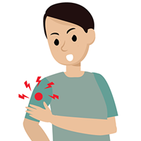
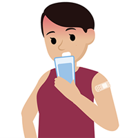

Post Vaccination Symptoms
About side-effects of COVID-19 Vaccine:
COVID-19 vaccines are safe, and getting vaccinated will help protect you against developing severe COVID-19 disease and dying from COVID-19. You may experience some mild side effects after getting vaccinated, which are signs that your body is building protection. Like any vaccine, COVID-19 vaccines can cause side effects, most of which are mild or moderate and go away within a few days on their own. As shown in the results of clinical trials, more serious or long-lasting side effects are possible. Vaccines are continually monitored to detect adverse events. Reported side effects of COVID-19 vaccines have mostly been mild to moderate and have lasted no longer thana few days. Typical side effects include pain at the injection site, fever, fatigue, headache, muscle pain, chills and diarrhoea. The chances of any of these side effects occurring after vaccination differ according to the specific vaccine. COVID-19 vaccines protect against the SARS-CoV-2 virus only, so it’s still important to keep yourself healthy and well.
Less common side effects
Upon receiving the vaccine, a person should be requested to stay for 15–30 minutes at the vaccination site so health workers are available in case of any immediate reactions. Individuals should alert their local health providers following vaccination if they experience any unexpected side effects or other health events – such as side effects lasting more than three days. Less common side effects reported for some COVID-19 vaccines have included severe allergic reactions such as anaphylaxis; however, this reaction is extremely rare. National authorities and international bodies, including WHO, are closely monitoring for any unexpected side effects following COVID-19 vaccine use.
Long term side effects
Side effects usually occur within the first few days of getting a vaccine. Since the first mass vaccination programme started in early December 2020, hundreds of millions of vaccine doses have been administered. There have been concerns about COVID-19 vaccines making people sick with COVID-19. But none of the approved vaccines contain the live virus that causes COVID-19, which means that COVID-19 vaccines cannot make you sick with COVID-19. After vaccination, it usually takes a few weeks for the body to build immunity against SARS-CoV-2, the virus that causes COVID-19. So it’s possible a person could be infected with SARS-CoV-2 just before or after vaccination and still get sick with COVID-19. This is because the vaccine has not yet had enough time to provide protection. Experiencing side effects after getting vaccinated means the vaccine is working and your immune system is responding as it should. Vaccines are safe, and getting vaccinated will help protect you against COVID-19.
Common Symptoms (or) Side effects:
On the arm when you get shot, the below are some possible side-effects:
-
pain
-
Redness
-
Swelling
To get relief from the above mentioned side-effects, Apply a clean, cool, wet washcloth over the area and also try to use or excercise your arm.
Throughout the rest of your body:
-
Tiredness
-
Muscle pain
-
Chills
-
Headache
-
Fever
-
Nausea
Drink plenty of fluids and if possible choose light-weight dresses.
~~The below given information are the list of medicines useful to treat some of the side-effects of Vaccine:
-
Acetaminophen, also called paracetamol or Tylenol, helps to reduce fevers and can definitely help manage muscle pain and body aches associated with COVID-19. Acetaminophen doesn’t treat the virus itself, nor does it reduce the duration of your illness. A lot of people feel pretty miserable from a fever, which means a fever reducer like acetaminophen is definitely an option for some relief.
-
Ibuprofen, which is also known by the brand names Advil and Motrin, is a non-steroidal anti-inflammatory drug (NSAID). These types of medications can help lower your fever and minimize muscle aches from COVID-19, while also reducing some inflammation in your body. Ibuprofen doesn’t treat the virus itself, but it can make you feel a lot better.
-
Naproxen, which is known as Aleve, is another NSAID (like ibuprofen) that can reduce inflammation and lower your fever. It cannot treat COVID-19 itself, but it can certainly help you feel better. Naproxen is similar to ibuprofen, except that it lasts longer. For many people, that means a single pill can keep your temperature down for up to 12 hours and help stave off body aches. But remember, if your doctor has told you not to take medications like ibuprofen or naproxen before, you shouldn’t take either one now.
Vaccine side - effects are common for any person. It ranges from person to person based on their immune system. The side - effects are raised since our body's immune system gets strengthed due to the shot (vaccine) given. So, getting side - effects is a sign that your body's immune system is getting activated. If the are much painful then the above medicines might be helpful for you. Click on Watch video to know how vaccination works on our body.
~~The below are the vaccine centers and COVID Treatment Centers: